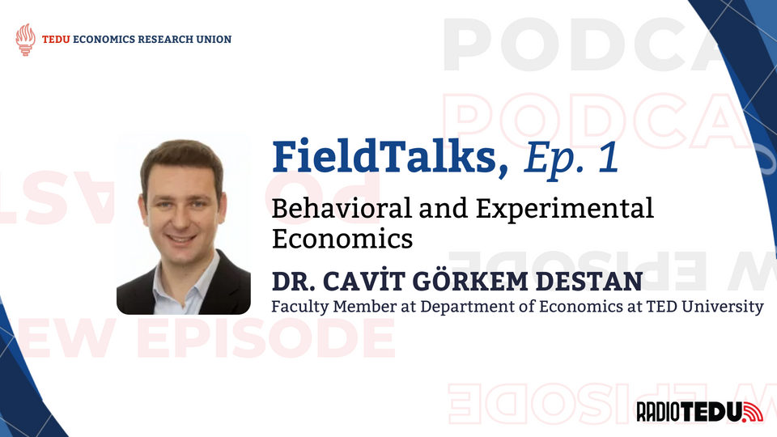
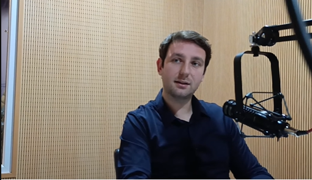
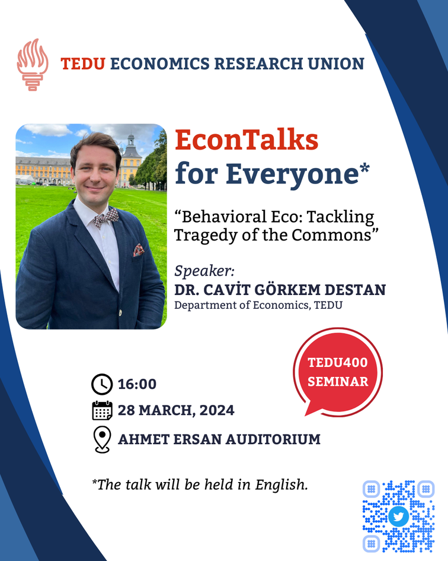

Dr. Cavit Görkem Destan, an economics academician at TED University, was the guest of the first episode of FieldTalks, a RadioTEDU podcast prepared in collaboration with the TEDU Economic Research Union. Podcast hosts Ezgi Eylem Erdoğan and Arda Akgül explored behavioral economics, Dr. Destan's career path, the differences between studying economics in Germany and Türkiye, and the future of behavioral and experimental economics.


I wanted to be an economist to save everyone
Dr. Destan revealed that he has wanted to be an economist since childhood. "Children rarely dream of becoming academics; they want to be astronauts or firefighters. But I've wanted to be an economist since childhood." Growing up in Türkiye during economic crises, he witnessed firsthand how instability impacted families and businesses, shaping his ambition.
"Kemal Derviş's reforms in the early 2000s showed me that economics could change lives," he explained. "I wanted to 'save everyone' through this field." After undergraduate studies, he shifted toward academia, believing it was the best platform to address systemic economic challenges.
Behavioral economics asks why people make irrational decisions in corporation with psychology. Experimental economics focuses on how to test these decisions using controlled methods. — Dr. Cavit Görkem Destan
Boğaziçi, Bonn, TEDÜ
Dr. Destan described his experience studying at the University of Bonn, which he called "one of the best schools in Europe" for behavioral economics. He clarified the distinction between two related disciplines: "Behavioral economics asks why people make irrational decisions in corporation with psychology. Experimental economics focuses on how to test these decisions using controlled methods." He cited Nobel Prize winner Daniel Kahneman as a foundational figure in behavioral economics, and Vernon Smith in experimental economics.
"Kahneman's work on biases and Smith's auction experiments revolutionized how we study human behavior," he added. However, both fields initially faced skepticism. "Behavioral studies were dismissed as 'just psychology,' while early experimental papers were rejected for using small samples," Dr. Destan explained. Researchers like Smith fought to prove that lab findings could scale to real-world markets.

I predict more theories and models will be needed
Today, behavioral and experimental economics are mainstream, with applications in policy, marketing, and development economics. Dr. Destan shared his predictions for the future, suggesting that while data becomes more abundant, the need for theory and models will only increase. He also expressed his belief that behavioral methods will become more important in other social sciences, emphasizing the importance of understanding how people process information and make decisions.
We need models to predict
As many fields, from tech to economics, are deeply affected by artificial intelligence, Dr. Destan stressed the enduring role of theory. "Big data alone can't explain causality. We need models to interpret patterns." He predicts behavioral insights will deepen across social sciences: "Understanding how people process complexity, whether in voting or stock markets, will define tomorrow's breakthroughs."

Broaden your vision
Dr. Destan offered practical advice to students interested in behavioral and experimental economics. "It is important to be aware of developments in other fields and to explore popular books and podcasts on the subject," he said. "Economics intersects with psychology, sociology, and even history. Read popular books like Nudge or podcasts like Hidden Brain to close these gaps."
He also urged students to take cross-disciplinary courses: "A psychology student might thrive in behavioral economics, just as an economist can learn from anthropology." His message was clear—the future of economics lies in breaking down disciplinary silos and building a broader intellectual foundation.
As the TED University Economics Research Union, we would like to express our gratitude to Dr. Cavit Görkem Destan for sharing his insights and experience. Make sure you're subscribed to the TED University Economics Research Union's YouTube Channel to be notified of new episodes! Visit youtube.com/@TEDUERU and follow us on instagram.com/erutedu.